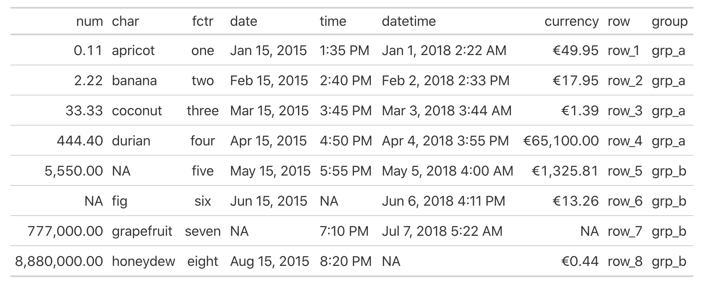

install.packages("gt")
2020-04-08
We are extremely excited to have our first release of the gt package available in CRAN! The name gt is short for “grammar of tables” and the goal of gt is similar to that of ggplot2, serving to not just to make it easy to make specific tables, but to describe a set of underlying components that can be recombined in different ways to solve different problems.
If you ever need to make beautiful customized display tables, I think you’ll find gt is up to the task. You can install gt 0.2 from CRAN with:
install.packages("gt")For an initial release, it’s pretty big! There are so many ways to structure a table, apply formatting and annotations, and style it just the way you want. Currently gt renders tables to the HTML output format (and has the ability to export to image files). We plan to also support the LaTeX and RTF output formats in the near future.
The website for the gt package has walkthrough articles for getting started and a function reference section with plenty of examples and images to show you how the table output is meant to appear.
We decided to formalize the parts of a table—and give them names—so that we have some language to act on. The larger components of a table (roughly from top to bottom) include the table header, the column labels, the stub and stub head, the table body, and the table footer. Within each of these components, there may be subcomponents (e.g., the table header contains a title and subtitle, the table body contains individual cells, etc.). Understanding how the parts fit together will make more sense with this diagram:
Learning new vocabulary is definitely a pain, but we believe it’s worthwhile. Like ggplot2, the new words take some getting used to, but we believe learning them will improve your ability to analyze and understand existing tables, and then successfully recreate them in gt.
exibble datasetThe exibble dataset is included in gt and its raison d’etre is to be a small dataset (8 rows and 9 columns) with different column types for experimenting with formatting. It fits easily on a single screen when printed as a tibble and rendered as a gt table, making it easy to see the results of our gt experimentation.
exibble# A tibble: 8 × 9
num char fctr date time datetime currency row group
<dbl> <chr> <fct> <chr> <chr> <chr> <dbl> <chr> <chr>
1 0.111 apricot one 2015-01-15 13:35 2018-01-01… 50.0 row_1 grp_a
2 2.22 banana two 2015-02-15 14:40 2018-02-02… 18.0 row_2 grp_a
3 33.3 coconut three 2015-03-15 15:45 2018-03-03… 1.39 row_3 grp_a
4 444. durian four 2015-04-15 16:50 2018-04-04… 65100 row_4 grp_a
5 5550 <NA> five 2015-05-15 17:55 2018-05-05… 1326. row_5 grp_b
6 NA fig six 2015-06-15 <NA> 2018-06-06… 13.3 row_6 grp_b
7 777000 grapefruit seven <NA> 19:10 2018-07-07… NA row_7 grp_b
8 8880000 honeydew eight 2015-08-15 20:20 <NA> 0.44 row_8 grp_bLet’s use that dataset to make the ‘Hello, World!’ of gt tables:
exibble %>% gt()
Just like how the ggplot() function is the entry point to ggplot2 plots, the gt() function serves as the first function to call for making gt tables.
The exibble dataset is blessed with an array of column types. This makes it a snap to experiment with gt’s collection of fmt_*() functions, which format the input data values.
Let’s test as many formatter functions as possible. Here’s the plan:
num display numbers with exactly 2 decimal places using fmt_number()date using date_style 6 (the m_day_year style) with fmt_date()time to time_style 4 (the hm_p style) with fmt_time()datetime formatted as such with the fmt_datetime() functioncurrency column with fmt_currency() to show us values in the euro currency (currency = "EUR")Phew! Here’s the code and the corresponding gt table:
exibble %>%
gt() %>%
fmt_number(columns = vars(num), decimals = 2) %>%
fmt_date(columns = vars(date), date_style = 6) %>%
fmt_time(columns = vars(time), time_style = 4) %>%
fmt_datetime(columns = vars(datetime), date_style = 6, time_style = 4) %>%
fmt_currency(columns = vars(currency), currency = "EUR")
As can be seen, entire columns had formatting applied to them in very specific ways. There is some finer control available as well. We can style a subselection of rows in any given column and there are quite a few ways to specify the target rows (e.g., row indices, row names in the stub, conditional statement based on column data, etc.).
This only scratches the surface of what is possible in formatting the table body, there are more fmt_*() functions. If they don’t exactly suit your needs you can use the general fmt() function and provide your own transformation function.
We can add components to the table. Let’s include a header with a title and subtitle, and, a footer with a source note. These parts are added with the tab_header() and tab_source_note() functions.
exibble %>%
gt() %>%
tab_header(
title = md("This is the `exibble` dataset in **gt**"),
subtitle = "It is one of six datasets in the package"
) %>%
tab_source_note(md("More information is available at `?exibble`."))
Adding new parts to the table is typically done by using a few tab_*() functions. Notice that we could style our text using Markdown with the included md() function.
The exibble dataset has the row and group columns, which were purposefully included for experimentation with the table stub and with row groups. Rather than explaining those components at length, let’s revise the above code so that these columns are used to create those components:
exibble %>%
gt(rowname_col = "row", groupname_col = "group") %>%
tab_header(
title = md("This is the `exibble` dataset in **gt**"),
subtitle = md("We can use the `row` and `group` columns to structure the table")
) %>%
tab_source_note(md("More information is available at `?exibble`."))
This change effectively gives us row labels in a separate area to the left (the stub), and, row group labels above each grouping of rows. This is great for data that naturally falls into groupings. And worry not, if the initial order isn’t what you expected or wanted, the row_group_order() function can be used to reorder the groupings.
Just as with the stub, we can create groupings of columns with spanner column labels that encompass one or more columns. The tab_spanner() function makes this possible. By providing a label and a selection of columns the new label is placed above those columns and the associated horizontal rule will span across. Should the columns not be adjacent to each other, tab_spanner() will automatically gather them together.
exibble %>%
gt(rowname_col = "row", groupname_col = "group") %>%
tab_spanner(label = "Dates and Times", columns = matches("date|time")) %>%
tab_header(
title = md("This is the `exibble` dataset in **gt**"),
subtitle = md("We can use the `tab_spanner()` function to organize and label columns")
) %>%
tab_source_note(md("More information is available at `?exibble`."))
It’s really not possible to explore much of what gt can do in a short blog post. You can do many more useful things like inserting footnotes, modifying text, borders, and fills, and, adding summary rows. Here’s an example of how the pizzaplace dataset can look with a little gt code (not shown here but available in this gist):

Getting started with gt can be a risk-free experience with the gt Test Drive. Hit the button below to be transported to an RStudio Cloud project with examples galore:

To make it easy to experiment with making gt tables, we included six datasets in the package: countrypops, sza, gtcars, sp500, pizzaplace (your favorite), and exibble. Strangely enough, each of these datasets is celebrated with a circular logo.
(Each of these datasets has a unique story in the world of gt so the deluxe graphics are warranted.)
While we’re only getting started on this package we feel things are really coming along. But sure to visit and engage with us at the gt issue tracker. We want to hear of any bugs, usage questions, or great ideas you might have to make this package better. Thanks!